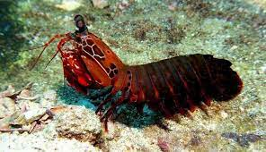

Fatos sobre o Stomatopoda
Informações gerais
Stomatopoda (ou estomatópode), chamados popularmente de tamarutacas ou de lacraias-do-mar no Brasil, cujo nome científico é Odontodactylus scyllarus, é uma ordem de crustáceos marinhos da subclasse Hoplocarida, que agrupa cerca de 400 espécies, caracterizadas principalmente pela morfologia da segunda pata torácica, que é modificada em apêndice subquelado, lembrando uma pata de louva-a-deus.
O boxeador

São animais que apresentam comportamentos sociais muito variados, desde ameaças visuais contra predadores até
comportamentos de côrte. De acordo com a anatomia da sua pata raptorial é possível distinguir entre dois grupos
funcionais, as perfuradoras (spearers) ou as esmagadoras (smashers), sendo que cada um dos tipos apresenta sua
própria variação comportamental e até mesmo de habitat.
As maiores esmagadoras, tais como exemplares de Odontodactylus scyllarus, são capazes de desferir um dos mais
rápidos e violentos golpes do reino animal, um soco que pode apresentar a velocidade de um tiro calibre .22
(equivalente a 720 km/h) e uma pressão de impacto de 600 N/cm². Essa força esmagadora é a
responsável pelo seu título de "lagosta-boxeadora" e é capaz de facilmente quebrar a carapaça de um caranguejo,
as conchas duras e calcificadas de gastrópodes ou até mesmo quebrar o vidro reforçado de um aquário.
Super visão

Esses animais possuem o mais complexo sistema de visão de cores do mundo animal, pois enxergam 12 cores primárias, correspondentes aos 12 pigmentos distintos presentes em sua retina. Nossos olhos possuem três tipos desses receptores - que correspondem à luz azul, verde e vermelha -, que nos permitem perceber o espectro de cores que vemos. Os cães contam com apenas dois tipos de cones (verde e azul), e é por isso que eles vêm tons de azul, verde e um pouco de amarelo. Muitos anfíbios, répteis, aves e insetos possuem quatro tipo de cones, o que significa que espécies dessas classes conseguem ver cores que o nosso cérebro é incapaz de processar. Algumas espécies específicas de borboletas e possivelmente pombos possuem cinco cones de percepção de cor, o que aumenta ainda mais a quantidade de pigmentos que eles são capazes de perceber. O sistema de visão dos estomatópodes possui doze cones sensíveis à luz e outros quatro que filtram a luz (16 cones no total), o que lhes permite ver cores polarizadas e imagens multiespectrais.[6] Como cada cone pode ver cerca de 100 cores, os estomatópodes são capazes de ver 1024 cores, ou seja, 1 septilhão de cores. Em comparação, o olho humano vê 106 cores, ou seja, 1 milhão de cores apenas. A visão dos estomatópodes é sensível à luz ultravioleta, mas ainda é desconhecido se ela pode distinguir a luz infravermelha.
Referência bibliográfica
- Joel W. Martin & George E. Davis (2001). An Updated Classification of the Recent Crustacea (PDF). [S.l.]: Natural History Museum of Los Angeles County. p. 132
- Infopédia, Dicionário de Língua Portuguesa da Porto Editora. «Estomatópode». Consultado em 2 de janeiro de 2014
- Justin Marshall & Johannes Oberwinkler (1999). «Ultraviolet vision: the colourful world of the mantis shrimp». Nature. 401 (6756): 873–874. Bibcode:1999Natur.401..873M. PMID 10553902. doi:10.1038/44751
- «BBC Science & Nature Mantis Shrimp». Consultado em 26 de abril de 2013. Arquivado do original em 27 de maio de 2012